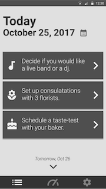
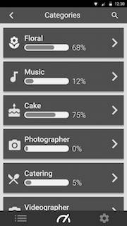

Design Refinement
Click here to open our prototype in a new tab.
What is your design? How does it work?
Our design is an app that partners can use to stay on top of wedding planning. After a series of configuration questions to set up the app, users are given tailored, specific tasks that they should complete each day based on what kind of vendors they are planning on having at their wedding, how far along in the planning process they are, where their wedding is located, etc. Users are able to set on which days and at what time they would like to receive new tasks from the app, and the app gives them tasks based on how far out from the wedding they are. For example, venues are usually booked about a year in advance, so if the person using the app has not yet booked a venue and they are less than a year away from their intended wedding date, the app will prioritize tasks regarding booking a venue so that they will be able to get their ideal venue for a reasonable price.
Tasks are grouped into categories such as Beauty, Floral, and Attire, and users are able to add tasks to any category on the desktop interface and are able to add entire categories of tasks if they are looking for something very specific that the app does not currently offer. For example, if you were having a circus themed wedding, you might need tasks such as “Set up interviews with 3 aerialists” or “Confirm the structural integrity of the venue for trapezists” in a category called Circus, which would obviously be a category full of tasks that not all users would need, but would be very important for some people to keep track of.


{kind=link}
When users view specific tasks, they are able to do the following things.
- Add notes about the task at hand
- View notes they have added to the app during previous tasks that might be relevant
- Mark the task as not relevant to remove it from their list and give the back-end algorithm more insight into what tasks the user is looking for
- Mark the task as completed
{kind=link}
Adding notes to each task will automatically populate a Google drive spreadsheet or document (depending on what is appropriate) with the information they have entered into the app. This is important because the user may want to share this information with the wedding party or others who are involved in the wedding but who are not involved in the explicit details of the planning process which the app provides.
At this point in time, our design is primarily designed for mobile, but after this phase, we believe we need to spend more time developing a desktop version of the app which will include the more complex features we are aiming to build, such as the ability to create new categories and tasks and input specific notes. The desktop prototype is in the works, but we did not yet feel comfortable with the state of it to present it for a heuristic evaluation. We are planning on doing another one of these evaluations during the next phase with the updated desktop prototype. Currently, we have a well refined mobile prototype that will able be further revised in the next phase to incorporate feedback from our heuristic evaluations and better interface with the desktop prototype.
What changed, and why did you change it?
Paper Prototype Engagement with Ellen: As we were shifting into the design refinement stage, we had an engagement with Ellen using our paper prototype. This engagement led to us significantly changing our design at the end of our design development phase. We jumped into the design refinement phase with the following changes.
In our initial sign-up flow, we ask the user for a bunch of information about their wedding but we never fully explain the main interaction of our app, the notifications that we have created for you that appear as often as you indicated in your preferences to help you plan. This was evidenced by Ellen going through our whole sign-up flow under the impression that our app’s notifications would remind her of what day she was getting married.
Throughout the design development flow, we had been adamant that our app was not going to be the place for users to store their actual wedding planning details. We would give them a task such as “Research 3 florists” and the result of that research (name of florist, phone number, hours, etc.) would be stored somewhere else by the user, not in our app. During our engagement, Ellen felt our tasks were too large and instead of looking at other tasks, she expected the app to provide more help text and an area to input the results of the task she was currently on. Without soliciting input from the user as they complete tasks, we were severely restricted in the type of advice we could dispense, bundling vague generic advice that may or may not be relevant into a notification we termed as a “conversation starter”. An example of a conversation starter would be “Have you thought about how weather might affect your wedding day?” but we now have the user input the results of each task and using that data, we can tailor our notifications to be relevant specifically to the user’s wedding day.
One final change builds off of the fact that users will now be inputting the results of each task that they complete in our app. Ellen, during the engagement, did not understand why she was seeing the tasks she was seeing and where they had come from. In our sign-up flow, we presented the user with a massive list of possible categories of tasks and they would then select the ones they wanted. We found that that is a pain point because it overwhelms the user with so many decisions they might not have made yet. Instead, users will be “configuring” one category at a time as they begin to use our app. This would present itself as an initial task to configure “Venue” where we narrow down on what the user has already completed and what the user has to do in terms of booking a venue for their wedding. We hope that this will provide more insight into where the notifications we are presenting to the user come from.
Below is a demo of the paper prototype we had at the end of the design development phase.
Designing for Mobile and Desktop: After conducting a paper prototype walk through, we realized that our application as a simple notification application was not very useful. We decided we wanted to store their information because they wanted to see the data on the tasks we were reminded them about, and we could provide them with more concrete tasks if we had data about their tasks. This was an interesting problem because we wanted to store their data, but we didn’t want to create a storage system or data collection architecture. We looked through our notes at how our users were storing data, and we identified they were storing data with Excel sheets online through Google docs and offline through Microsoft’s Excel. We realized we didn’t have to create a whole new Excel sheet replacement, but rather an integration with Google docs. This was a major aspect to our application that we incorporated during this phase that was not present before.
We listed out the functionality we wanted to give our users with our application. The core functionality for mobile includes:
- View task reminders for the day and be able to mark the task as done or not relevant.
- View task by category in case they want to see all of the tasks they have to do to complete each section.
- View tasks by calendar to see when they will be reminded to do specific tasks.
- Change when and how many notifications they would like to see.
The core functionality for desktop includes:
- Add a new category that they would like to include as part of their wedding. By doing this, they will get notifications about tasks in that category.
- Remove a category that was previously part of their wedding planning, but they no longer want to include in their wedding.
- Add a new task to any of the categories in case there is something specific to them that falls into one of the categories.
- Edit the details about any of the tasks such as when they would like to be reminded to do it, the name of the task, and which category it falls into.
- Edit the data associated with each task such as any data relevant to the task. For example, if the task is schedule a consultation with the florists you might considering, the user only needs to see the florists the user is still considering, not the ones they crossed off their list. They should be able to edit this information to keep updated.
Functionality included in both:
- Mark tasks as irrelevant to them.
- Mark tasks as done.
- Type in their data to mark a task as complete and for us to save it for them
- View the progress on each category
Franton’s, Aaron’s, and Haley’s Feedback: Our first round of heuristic evaluations came from Franton, Aaron, and Haley on Team Badlands. One common theme that all three of our evaluators pointed out is that they still don’t know where these notifications are coming from. Our sign-up flow still does not adequately explain what the point of our app is or prepare the user for the core interaction. We have still not designed the configuration flow and doing so should help alleviate this uneasiness we are seeing when users click through our prototype about the notifications and how they are generated in addition to adding help text to the sign-up flow to clarify expectations for the user.
In addition, we found that the “Done” button which we used to mark as a task as completed was not clear to our evaluators. This could be clarified with an introductory walkthrough when the user downloads the app, which would show an example task, the type of inputs the user may enter, and then mark itself as completed when the user presses the “Done” button. This could also be resolved with more help text or different language used in the app to show that notifications and cards are tasks and marking them as done is the same as completing them.
We have also had a lot of discussions in our team about the progress bar shown on the dashboard page and in what form does the progress bar communicate the most information to our user. Our evaluators pointed out to us that the progress bar is fine but more importantly, they would rather see something that tells the user whether or not they are on track to complete the tasks in this category by their wedding day. Making this change means we would have to discuss how to prioritize tasks for the user and how to deal with constraints when the user can’t complete the tasks they need to for their wedding day at the rate they are currently progressing.
Sophie's and Jacob’s Feedback:  Another round of heuristic evaluations revealed several key usability issues in our designs for the mobile app, which served as a great starting point for our final refined prototypes. One of the biggest issues dealt with transparency into what the app is doing in the background to curate a personalized planning list, and easing the user into the task completion process. Initially, the user was dropped directly into a list of tasks to complete directly after the signup process without any indication of why the tasks shown were there or where they came from. Based on prior experience using todo lists, users felt uncomfortable having a predefined list show up for them without any direct customization, other than the sign-up process.
This feedback demonstrated a clear need for more user control over the planning curation process. As part of the process of planning their wedding, we plan on introducing users to categories one by one - going through a quick configuration flow to help us create a set of tasks more relevant to their planning experience. Adding more transparency and opportunity for control will help make the user’s first experience of using the app more intuitive and less jarring.
Another main area of improvement is the interaction the use has with task cards.
In our initial designs, we failed to fully explain and provide more context for what it means to ‘add results’ to a task, or click ‘Done’ at the bottom. Both users testing our designs in this round of heuristic evaluations found the language to be vague and unclear - what do ‘results’ mean? Does clicking ‘Done’ do anything to the task, or does it just exit the page? In light of these usability issues, we plan to rethink and consider more carefully the language and iconography we use to convey different actions and affordances available to the user. For instance, using descriptive icons and more specific text that describes the effect of clicking the button, like ‘Complete Task’, will more effectively describe the affordances available.

{kind=link}
Another key area that presents a lot of room for improvement is the category dashboard page. Users evaluating our designs had difficulty making sense of two main components - how tasks fit into categories, and what goes into creating the percentage complete statistic listed for each category. Moreover, users expressed discomfort that some of the categories felt like they would overlap a lot (e.g. beauty and attire), and that the list was way too long to navigate effectively. To address these concerns, we’re currently working on prototyping various solutions:
- Allowing more configuration/customization to help familiarize users with the categories
- Introducing grouping/more prominent search to allow the list to be searched more easily
- Assigning weights/points to the tasks to give users more transparency into how percentages are determined
- Getting rid of the progress bars altogether
In general, these heuristic evaluations provided a lot of insight and useful evidence that will help us move forward and continue to improve our designs.
What key insights did you gain during this phase?
- Designing for Different Devices: During this phase, we heavily debated whether or not it was best to design this wedding planner application for desktop or mobile. While we thought this was a mutually exclusive design process after weighing the pros and cons of each, we realized that designing an application can require the devices of both a desktop and mobile phone. On one hand our users can benefit from uploading mobile photos onto the app while they are looking at a venue, or scheduling a flower visit. On the other hand, tasks that involve research or emailing a large group of people require the use of a desktop. We felt that control and flexibility was such a key value in our users that we wanted to design for both in order to accommodate to their various needs.
- Importance of Categories: Users tend to think of tasks in categories. Originally when we created our design we would indicate the task categories as a simple text title at the top of the task card. As we mentioned before, after talking to Ellen we realized that there was a need to see more tasks in that category and we dedicated a separate section in our mapping dedicated just for looking at tasks in specific categories. In addition, we created icons to represent each category as another way to place emphasis on categories and allows for easier recognition of the different categories.
- The Importance of Help and Documentation: Help and Documentation is often times overlooked when you have been working on the app for a while. As we mentioned previously, we saw this when Ellen mentioned she was confused what our app was even about when she first used it. We then incorporated her feedback by doing a walk through of what the app provides. However, during our heuristic evaluation we realized that we needed to include more help and documentation in regards to explaining how we preselected categories and tasks based on common weddings. While it seemed like an obvious design choice for our team to immediately provide these categories, we were so invested in wedding planning that we didn’t even think about why or how the different categories got selected. For our next design, we will try to incorporate some way to indicate to users that these categories are pre-selected.
- Users value a timeline: When speaking to several of our users one of their key values was thinking about tasks in relation to how close it was to the wedding (ex: This task is 4 months away from the wedding). While this was a key insight that we learned last phase, we didn’t necessarily implement this key insight into our design until this phase. When we first designed the calendar section we included tasks in the order of which they were due. However, during this design phase we put more emphasis on our users being able to see a calendar for both categories and a timeline perspective. Thus, if a user wanted to see how many tasks they had to do in a given time or just see what their agenda would look like in the next three weeks, the calendar being placed as a split screen helps to emphasize this control for user.
What questions do you have now about your project? What shortcomings are you aware of?
One of design decisions our group was arguing about was how important it was to illustrate the progress of tasks in each category. Our current design showed a progress bar and a percentage that would indicate to the user how far along they are in completing the tasks within a given wedding category. This concern was confirmed during our heuristic design review when our users stated they were confused how the progress bar was determined - what if more tasks carry more “to-do” weight than others? How do you measure that? Going into this next phase we will be thinking about how important progress bars are and how we can better reflect their meaning to our users.
Furthermore, during this design period we were a very fragmented team between mobile and desktop and it was difficult to communicate in order to form a uniform design across both devices Some people individually expressed interest in learning how to design for desktop and others wanted to learn how to design for mobile. While each member of the team learned the difficulties and benefits in designing for both interface, we are unsure of where to best put our efforts: continuing to design for both or focusing our attention on one device?
Effort Chart
| Annabel | Christina | Zoher | Casey | Patrick | Total | |
|---|---|---|---|---|---|---|
| Project Brief | 20 | 20 | 20 | 20 | 20 | 100 |
| Needs Analysis | 20 | 20 | 20 | 20 | 20 | 100 |
| Design Development | 27 | 10 | 12 | 24 | 27 | 100 |
| Design Refinement | 23 | 18 | 18 | 18 | 23 | 100 |